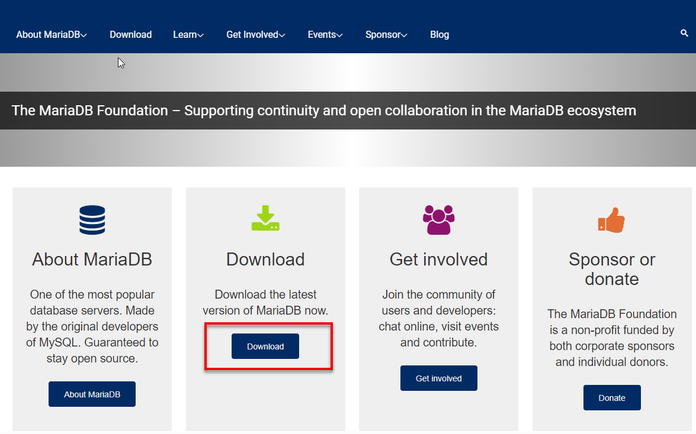
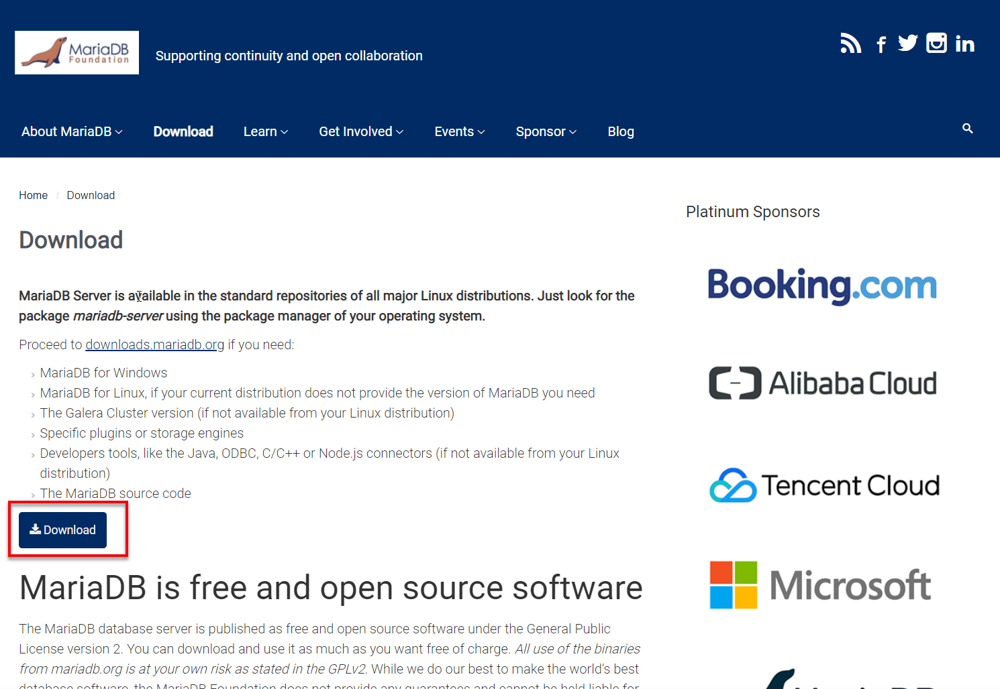
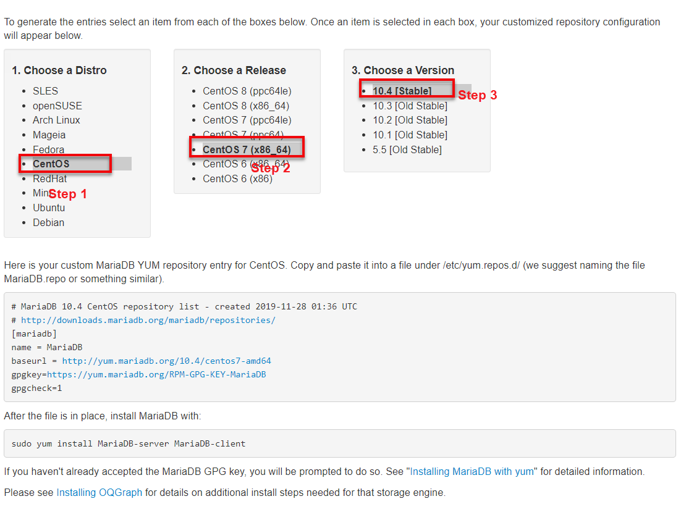
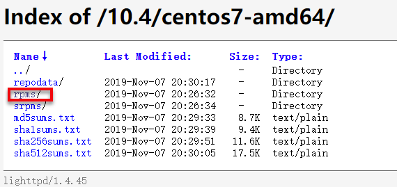
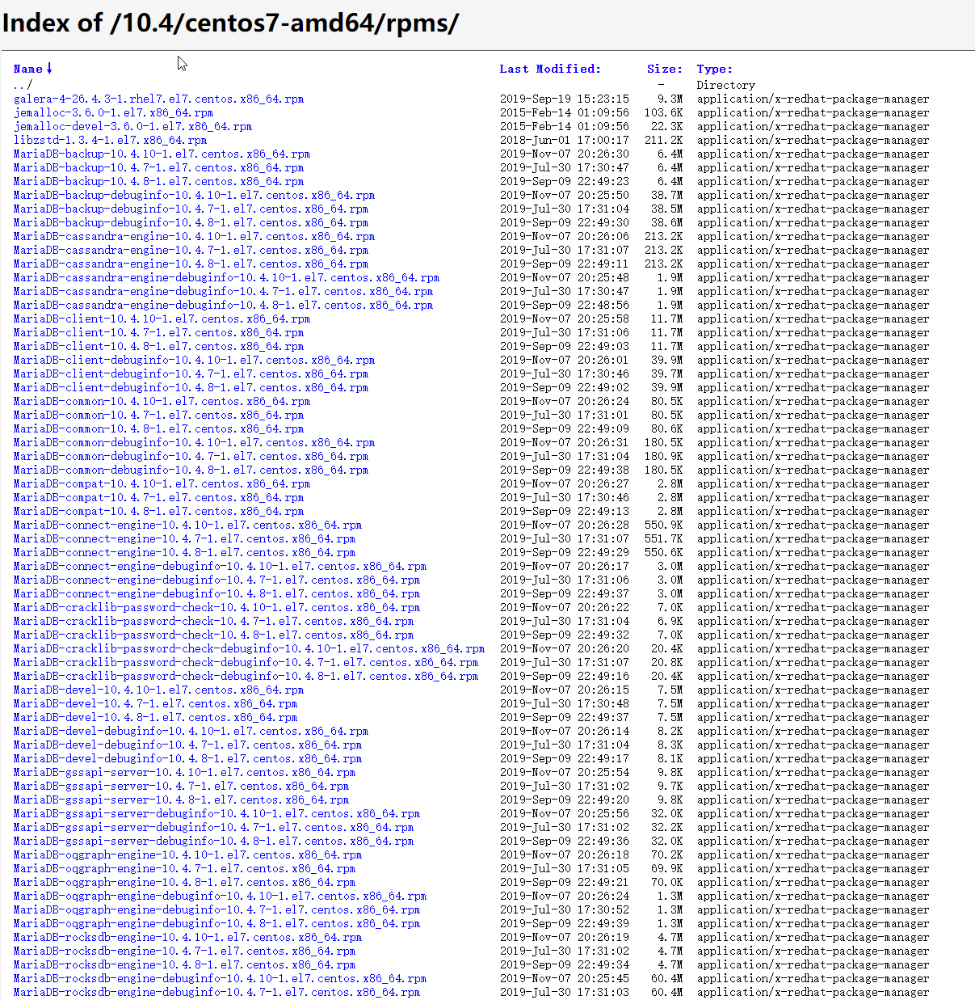
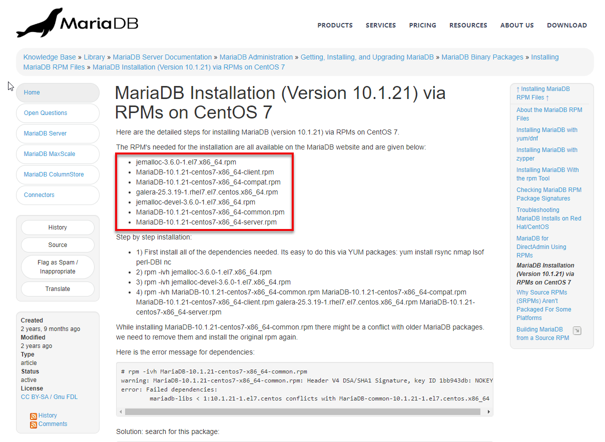
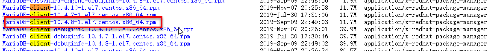
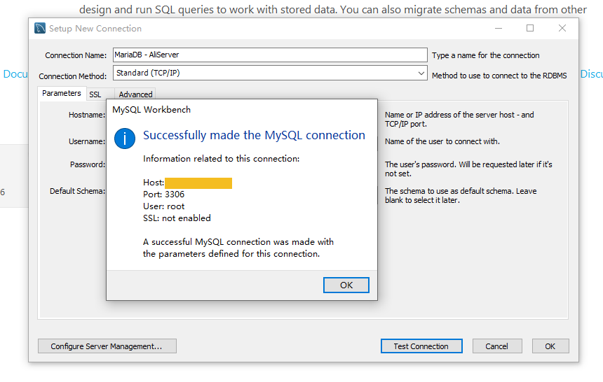

原文连接:https://www.cnblogs.com/zhangpan1244/p/11955798.html
安装方式
- 在线安装（慢的要命）
- RPM离线安装(CentOS7.X)
在线安装
- 打开官方网站 https://mariadb.org/

- 点击Download,跳转到下一页面

- 继续点击Download,进到下页

- 点击红框中的[链接] (https://downloads.mariadb.org/mariadb/repositories/#mirror=23Media),进到一下页面

- 根据自己的服务器的类型/版本来选择要安装的数据库版本.
按照上述步骤可以在线安装。
离线安装
- 点击图4中的baseurl

- 点击rpms, 可以看到一堆rpm包，不要着急，继续看下一步

打开MariaDB org --> Learn --> [MariaDB Knowledge Base] --> MariaDB Server -->
Getting, Installing, and Upgrading MariaDB --> MariaDB Binary Packages --> Installing MariaDB RPM Files --> MariaDB Installation (Version 10.1.21) via RPMs on CentOS 7
最终的url点击之后，就可以看到如下图所示界面：

本来完全可以提供最终的一个url，提供一步一步点击的按钮连接，是为了方便大家来学习路线思路，而不能只拿结果。
还记得我们之前第二步看到的一堆rpm包吗？ 下载第三步方框中的package,当然，这个文档的版本稍有点落后，但是我们只需要搜索前缀名称就行了，比如搜索
client:

我们下载最新版本就可以了。
接下来进入正式步骤了哦～：
在图7中有Step by step installation:
Step by step installation:
- 1) First install all of the dependencies needed. Its easy to do this via YUM packages: yum install rsync nmap lsof perl-DBI nc
- 2) rpm -ivh jemalloc-3.6.0-1.el7.x86_64.rpm
- 3) rpm -ivh jemalloc-devel-3.6.0-1.el7.x86_64.rpm
- 4) rpm -ivh MariaDB-10.1.21-centos7-x86_64-common.rpm MariaDB-10.1.21-centos7-x86_64-compat.rpm MariaDB-10.1.21-centos7-x86_64-client.rpm galera-25.3.19-1.rhel7.el7.centos.x86_64.rpm MariaDB-10.1.21-centos7-x86_64-server.rpm
按照步骤我们开始：
安装依赖信息，命令行执行：
[root@iZ2ze7s2v0b78922wia32rZ software]# yum install rsync nmap lsof perl-DBI nc安装我们之前下载的版本
jemalloc-3.6.0-1.el7.x86_64.rpm[root@iZ2ze7s2v0b78922wia32rZ mariadb]# rpm -ivh jemalloc-3.6.0-1.el7.x86_64.rpm安装
jemalloc-devel-3.6.0-1.el7.x86_64.rpm[root@iZ2ze7s2v0b78922wia32rZ mariadb]# rpm -ivh jemalloc-devel-3.6.0-1.el7.x86_64.rpm安装剩余的mariadb相关的包，一定要注意顺序.
common > compat > client > galera > server[root@iZ2ze7s2v0b78922wia32rZ mariadb]# rpm -ivh MariaDB-common-10.4.8-1.el7.centos.x86_64.rpm MariaDB-compat-10.4.8-1.el7.centos.x86_64.rpm MariaDB-client-10.4.8-1.el7.centos.x86_64.rpm galera-4-26.4.3-1.rhel7.el7.centos.x86_64.rpm MariaDB-server-10.4.8-1.el7.centos.x86_64.rpm warning: MariaDB-common-10.4.8-1.el7.centos.x86_64.rpm: Header V4 DSA/SHA1 Signature, key ID 1bb943db: NOKEY error: Failed dependencies: mariadb-libs < 1:10.1.0 conflicts with MariaDB-compat-10.4.8-1.el7.centos.x86_64 mariadb-libs is obsoleted by MariaDB-compat-10.4.8-1.el7.centos.x86_64 libaio.so.1()(64bit) is needed by MariaDB-client-10.4.8-1.el7.centos.x86_64 libaio.so.1(LIBAIO_0.1)(64bit) is needed by MariaDB-client-10.4.8-1.el7.centos.x86_64 libaio.so.1(LIBAIO_0.4)(64bit) is needed by MariaDB-client-10.4.8-1.el7.centos.x86_64 libboost_program_options.so.1.53.0()(64bit) is needed by galera-4-26.4.3-1.rhel7.el7.centos.x86_64 libaio.so.1()(64bit) is needed by MariaDB-server-10.4.8-1.el7.centos.x86_64 libaio.so.1(LIBAIO_0.1)(64bit) is needed by MariaDB-server-10.4.8-1.el7.centos.x86_64 libaio.so.1(LIBAIO_0.4)(64bit) is needed by MariaDB-server-10.4.8-1.el7.centos.x86_64执行之后发现报错，还是在图7显示页面，我们可以看见
Step by step installation:段落结束之后有这么一句：Here is the error message for dependencies:# rpm -ivh MariaDB-10.1.21-centos7-x86_64-common.rpm warning: MariaDB-10.1.21-centos7-x86_64-common.rpm: Header V4 DSA/SHA1 Signature, key ID 1bb943db: NOKEY error: Failed dependencies: mariadb-libs < 1:10.1.21-1.el7.centos conflicts with MariaDB-common-10.1.21-1.el7.centos.x86_64是不是和我们的错误很相似？按照官方提供的solution就可以解决了。
后续还有几个错误，同样按照官方给出的解决方案处理，一步一步就搞定了，如下：
[root@iZ2ze7s2v0b78922wia32rZ mariadb]# rpm -qa | grep mariadb-libs mariadb-libs-5.5.60-1.el7_5.x86_64 [root@iZ2ze7s2v0b78922wia32rZ mariadb]# rpm -ev --nodeps mariadb-libs-5.5.60-1.el7_5.x86_64 Preparing packages... mariadb-libs-1:5.5.60-1.el7_5.x86_64 [root@iZ2ze7s2v0b78922wia32rZ mariadb]# rpm -qa | grep mariadb-libs [root@iZ2ze7s2v0b78922wia32rZ mariadb]# yum install boost-devel.x86_64 Loaded plugins: fastestmirror Loading mirror speeds from cached hostfile Resolving Dependencies --> Running transaction check ... Is this ok [y/d/N]: y ... Complete! [root@iZ2ze7s2v0b78922wia32rZ mariadb]# rpm --import http://yum.mariadb.org/RPM-GPG-KEY-MariaDB然后重新回到安装的第四步：
[root@iZ2ze7s2v0b78922wia32rZ mariadb]# rpm -ivh MariaDB-common-10.4.8-1.el7.centos.x86_64.rpm MariaDB-compat-10.4.8-1.el7.centos.x86_64.rpm MariaDB-client-10.4.8-1.el7.centos.x86_64.rpm galera-4-26.4.3-1.rhel7.el7.centos.x86_64.rpm MariaDB-server-10.4.8-1.el7.centos.x86_64.rpm error: Failed dependencies: libaio.so.1()(64bit) is needed by MariaDB-client-10.4.8-1.el7.centos.x86_64 libaio.so.1(LIBAIO_0.1)(64bit) is needed by MariaDB-client-10.4.8-1.el7.centos.x86_64 libaio.so.1(LIBAIO_0.4)(64bit) is needed by MariaDB-client-10.4.8-1.el7.centos.x86_64 libaio.so.1()(64bit) is needed by MariaDB-server-10.4.8-1.el7.centos.x86_64 libaio.so.1(LIBAIO_0.1)(64bit) is needed by MariaDB-server-10.4.8-1.el7.centos.x86_64 libaio.so.1(LIBAIO_0.4)(64bit) is needed by MariaDB-server-10.4.8-1.el7.centos.x86_64发现还是报错？？？
这个是官方在
10.4.8中新引入的一个问题,需要下载一个依赖包libaio:[root@iZ2ze7s2v0b78922wia32rZ mariadb]# wget http://mirror.centos.org/centos/6/os/x86_64/Packages/libaio-0.3.107-10.el6.x86_64.rpm --2019-11-28 10:52:26-- http://mirror.centos.org/centos/6/os/x86_64/Packages/libaio-0.3.107-10.el6.x86_64.rpm下载成功之后，安装一下当前下载的依赖包：
[root@iZ2ze7s2v0b78922wia32rZ mariadb]# rpm -ivh libaio-0.3.107-10.el6.x86_64.rpm
然后再一次重复Step 4:
[root@iZ2ze7s2v0b78922wia32rZ mariadb]# rpm -ivh MariaDB-common-10.4.8-1.el7.centos.x86_64.rpm MariaDB-compat-10.4.8-1.el7.centos.x86_64.rpm MariaDB-client-10.4.8-1.el7.centos.x86_64.rpm galera-4-26.4.3-1.rhel7.el7.centos.x86_64.rpm MariaDB-server-10.4.8-1.el7.centos.x86_64.rpm
Preparing... ################################# [100%]
Updating / installing...
1:MariaDB-compat-10.4.8-1.el7.cento################################# [ 20%]
2:MariaDB-common-10.4.8-1.el7.cento################################# [ 40%]
3:MariaDB-client-10.4.8-1.el7.cento################################# [ 60%]
4:galera-4-26.4.3-1.rhel7.el7.cento################################# [ 80%]
5:MariaDB-server-10.4.8-1.el7.cento################################# [100%]
Two all-privilege accounts were created.
One is root@localhost, it has no password, but you need to
be system 'root' user to connect. Use, for example, sudo mysql
The second is mysql@localhost, it has no password either, but
you need to be the system 'mysql' user to connect.
After connecting you can set the password, if you would need to be
able to connect as any of these users with a password and without sudo
See the MariaDB Knowledgebase at http://mariadb.com/kb or the
MySQL manual for more instructions.
Please report any problems at http://mariadb.org/jira
The latest information about MariaDB is available at http://mariadb.org/.
You can find additional information about the MySQL part at:
http://dev.mysql.com
Consider joining MariaDB's strong and vibrant community:
https://mariadb.org/get-involved/终于安装成功了。。。
接下来，最后一步配置数据库：
# 启动mariaDB,(因为mariaDB是mysql作者写的新的数据库，其实服务和mysql是一样的，所以启动使用的是下面)
[root@iZ2ze7s2v0b78922wia32rZ ~]# service mysql start
# 安全配置
[root@iZ2ze7s2v0b78922wia32rZ ~]# mysql_secure_installation
# 输入root密码，安装后第一次启动为空，直接回车
Enter current password for root (enter for none):
# step 1： 是否切换到unix_socket安全认证，否
Switch to unix_socket authentication [Y/n] n
# step 2: 更改密码，选择修改
Change the root password? [Y/n] y
# step 3: 移除匿名用户，选择是
Remove anonymous users? [Y/n] y
# step 4: 是否允许root远程登录，根据个人需求，因为我是测试服务器选择允许
Disallow root login remotely? [Y/n] y
# step 5: 移除test数据库
Remove test database and access to it? [Y/n] y
# step 6: 重新加载权限表
Reload privilege tables now? [Y/n] y
# 看到下面，说明成功啦！！！
All done! If you've completed all of the above steps, your MariaDB
installation should now be secure.
Thanks for using MariaDB!测试
登录数据库：
[root@iZ2ze7s2v0b78922wia32rZ ~]# mysql -u root -p修改root远程连接权限
MariaDB [(none)]> grant all privileges on *.* to 'root'@'%' identified by 'your password';
Query OK, 0 rows affected (0.001 sec)
MariaDB [(none)]> flush privileges;
Query OK, 0 rows affected (0.000 sec)客户端远程连接
